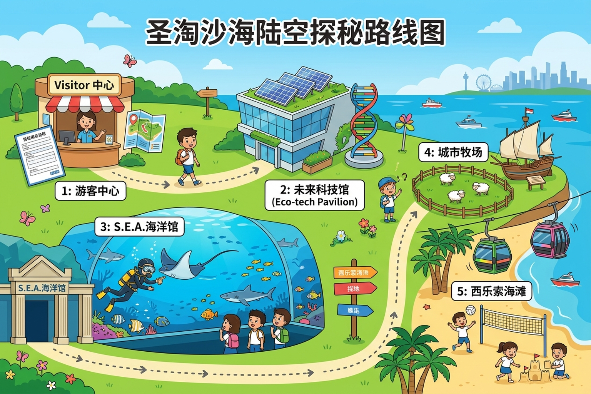
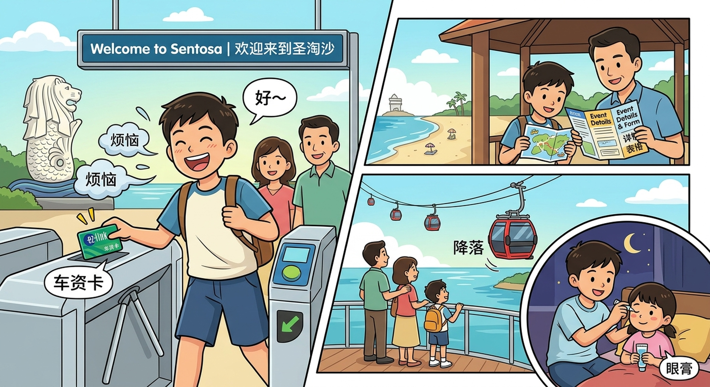

第一关：词语攻坚 10分 —— 听音识字与语境搭配
| 题号 | 拼音提示 | 写汉字（填空） | 生活语境填空句子 |
|---|---|---|---|
| 1 | chē zī kǎ | 每天清晨乘坐巴士或地铁，上车时要记得刷好 ______ 。 | |
| 2 | yǎn gāo | 奶奶眼睛容易干涩发痒，每晚睡前都要涂上 ______ 护眼。 | |
| 3 | tián xiě | 参加圣淘沙研学活动前，每位同学都必须认真 ______ 报名表。 | |
| 4 | biǎo gé | 请仔细核对这张活动登记 ______ 上的个人信息。 | |
| 5 | chuàng xīn | 学校科技节倡导环保生活，鼓励同学们大胆 ______ 环保设计。 | |
| 6 | jī yīn | 生物科普馆里，我们通过屏幕了解了海洋生物独特的 ______ 结构。 | |
| 7 | qián shuǐ | 名胜世界里，游客们隔着大水族缸观看精彩的 ______ 表演。 | |
| 8 | jiàng luò | 傍晚时分，跨海高空缆车平稳缓缓地 ______ 在西乐索海滩。 |
提示：先拼读，再写汉字；“车资卡”为新加坡常用生活词汇。
正确答案：
1. 车资卡 · 2. 眼膏 · 3. 填写 · 4. 表格 · 5. 创新 · 6. 基因 · 7. 潜水 · 8. 降落
连线对照：降落→to land / touch down；潜水→to dive；海洋→ocean；航海→to sail
1. 车资卡 · 2. 眼膏 · 3. 填写 · 4. 表格 · 5. 创新 · 6. 基因 · 7. 潜水 · 8. 降落
连线对照：降落→to land / touch down；潜水→to dive；海洋→ocean；航海→to sail
第二关：火眼金睛 10分 —— 情境纠错与选词
2A 圈错改正（6分，每题2分）
1. 考完华文后，小华去圣淘沙游玩，心中的烦脑立刻烟消云散。
圈出： → 改正为：
2. 参加本次海岛研学营前，请查看通知上的活动祥情与集合时间。
圈出： → 改正为：
3. 太阳缓缓下山，跨海高空缆车平稳地将落在西乐索海滩。
圈出： → 改正为：
2B 语境选词填空（4分，每题2分）
4. 新加坡国立大学举办科技展，展出了许多由中学生自主研发的绿色 ______ 。
5. 圣淘沙名胜世界里最吸引游客的，是深水缸中惊险优美的 ______ 表演。
2A 纠错： 1. 圈 脑 → 改 恼（烦恼） · 2. 圈 祥 → 改 情（详情） · 3. 圈 将 → 改 降（降落）
2B 选词： 4. B 产品 · 5. A 潜水
2B 选词： 4. B 产品 · 5. A 潜水
第三关：空间排序 12分 —— 海陆空路线导航

图 1：圣淘沙海陆空探秘 5 站动线示意图
3A 动线乱序整理与连接词补全（6分）
A. （ ）坐高空缆车缓缓降落在西乐索海滩，结束了一天充实的探秘。
B. （ ）港湾站出发，（ ）在游客中心填写登记表格，了解活动详情。
C. （ ）走进未来科技馆，体验环保创新科技，了解水母的奇妙基因。
D. （ ）前往著名的 S.E.A. 海洋馆，看潜水员在深水隧道中喂食鱼群。
E. （ ）穿过林荫小道，到达微型城市牧场，给温顺的小山羊喂青草。
F. 顺道参观旁边的海事文化馆，瞻仰古代壮丽的航海大帆船。
正确参观动线顺序（填字母 A–F）：
→
→
→
→
→
3B 空间连接词运用与选填（6分）
词箱：首先、接着、然后、之后、最后、从……出发、前往、到达、返回
1. 港湾站地铁站出发，我们乘车前往圣淘沙。
2. 在游客中心填写了表格， 走进未来科技馆。
3. 在海洋馆看完潜水表演 ，我们前往微型牧场喂羊。
4. 坐缆车降落西乐索海滩，满载快乐返回家中。
3A 动线顺序： B → C → D → E → F → A
连接词填空参考： A. 最后 · B. 从……出发 / 首先 · C. 接着 · D. 然后 / 前往 · E. 之后 / 到达
3B 句式参考： 1. 从 · 2. 首先 / 接着 · 3. 之后 / 之后 · 4. 最后
连接词填空参考： A. 最后 · B. 从……出发 / 首先 · C. 接着 · D. 然后 / 前往 · E. 之后 / 到达
3B 句式参考： 1. 从 · 2. 首先 / 接着 · 3. 之后 / 之后 · 4. 最后
第四关：实用阅读侦探 14分 —— 《圣淘沙海陆空探秘日》
🎧 课文朗读录音：
🐢 慢速跟读版：
上周六早晨，我和家人决定去圣淘沙游玩，把备考华文的烦恼全部抛到脑后。我们带上水壶，刷车资卡搭乘地铁，从港湾站出发前往圣淘沙。
首先，我们在游客服务中心填写探秘活动的登记表格，工作人员热情地递给我们一份指南，上面写满了各项活动的详情。接着，我们走进未来科技馆，这里展示了许多环保创新科技，我们还买到了由海藻制成的绿色产品；在生命科学互动角，我们兴致勃勃地了解发光水母的奇妙基因。
然后，我们前往闻名世界的海洋馆，漫步在幽蓝的海底隧道中，正巧遇上专业潜水员在水中给魔鬼鱼喂食。之后，我们穿过林道，到达微型城市牧场，给温顺的小山羊喂青草，旁边展厅里的古老航海帆船模型更是气派非凡。
傍晚时分，我们乘坐跨海高空缆车，微风吹拂，缆车缓缓降落在西乐索海滩。满载着快乐，我们踏上返回温馨家园的路。睡前，妹妹觉得眼睛有些酸涩，妈妈细心地帮她涂上眼膏。这一天，我们深切体会到：华文词语就在丰富多彩的生活中！
首先，我们在游客服务中心填写探秘活动的登记表格，工作人员热情地递给我们一份指南，上面写满了各项活动的详情。接着，我们走进未来科技馆，这里展示了许多环保创新科技，我们还买到了由海藻制成的绿色产品；在生命科学互动角，我们兴致勃勃地了解发光水母的奇妙基因。
然后，我们前往闻名世界的海洋馆，漫步在幽蓝的海底隧道中，正巧遇上专业潜水员在水中给魔鬼鱼喂食。之后，我们穿过林道，到达微型城市牧场，给温顺的小山羊喂青草，旁边展厅里的古老航海帆船模型更是气派非凡。
傍晚时分，我们乘坐跨海高空缆车，微风吹拂，缆车缓缓降落在西乐索海滩。满载着快乐，我们踏上返回温馨家园的路。睡前，妹妹觉得眼睛有些酸涩，妈妈细心地帮她涂上眼膏。这一天，我们深切体会到：华文词语就在丰富多彩的生活中！

图 2：刷车资卡、看详情、缆车降落与睡前涂眼膏的生活画卷
1. 小明一家去圣淘沙的主要原因是什么？（2分）
2. 在未来科技馆里，小明和家人了解到了什么？（2分）
3. 关于“微型城市牧场与展厅”，下列哪项叙述是正确的？（2分）
4. 空间转换路线追踪表（4分，每空1分）
| 站次 | 游览地点 | 核心活动内容填空 |
|---|---|---|
| 第一站 | 游客服务中心 | 填写登记（ ），了解活动（ ） |
| 第二站 | 未来科技馆 | 体验环保（ ），了解水母（ ） |
| 第三站 | S.E.A. 海洋馆 | 漫步海底隧道，观赏专业（ ）员喂鱼 |
| 终点站 | 西乐索海滩 | 乘坐高空缆车缓缓（ ），看夕阳 |
5. 情感升华与生活应用问答（4分）
答题支架：我最喜欢 ______ ，因为在这里可以 ______ ，体验到 ______ 。
1. B 放松心情消除烦恼 · 2. B 发光水母基因与环保产品 · 3. C 展出古老航海帆船模型
4. 表格 / 详情 / 创新 / 基因 / 潜水 / 降落
5. 参考：我最喜欢海洋馆，因为漫步在海底隧道可以近距离观看专业潜水员喂食魔鬼鱼，了解丰富的海洋生物，感受奇妙的自然魅力。
4. 表格 / 详情 / 创新 / 基因 / 潜水 / 降落
5. 参考：我最喜欢海洋馆，因为漫步在海底隧道可以近距离观看专业潜水员喂食魔鬼鱼，了解丰富的海洋生物，感受奇妙的自然魅力。
第五关：导览创作与口试模拟 14分
5A 真实导览口述稿创作（10分）
动线提示（5 站固定）： 1. 游客中心（填表格、拿详情） → 2. 未来科技馆（创新产品、水母基因） → 3. 海洋潜水馆（海底隧道、潜水表演） → 4. 城市牧场（喂小羊、看航海帆船） → 5. 西乐索海滩（缆车降落、海风美景）
要求：① 空间连接词 ≥ 4 个 ② 单元生词 ≥ 5 个 ③ 每站点明“地点 + 活动”
要求：① 空间连接词 ≥ 4 个 ② 单元生词 ≥ 5 个 ③ 每站点明“地点 + 活动”
三步法速写（构思草稿）：
| 步骤 | 你的构思 |
|---|---|
| ① 想路线（5站） | 1.游客中心 2.未来科技馆 3.海洋馆 4.城市牧场 5.西乐索海滩 |
| ② 选连接词（各1个） | 站1: 首先 站2: 接着 站3: 然后 站4: 之后 站5: 最后 |
| ③ 嵌生词说活动 |
正式口述稿（80–100字）：
字数：0
高分范文参考（98字）：
各位同学好！今天由我带大家参观。首先我们在游客中心集合，填写表格了解活动详情。接着前往创新科技馆，探索有趣的生物基因。然后走进海洋馆，欣赏精彩的潜水表演。之后到达牧场喂小羊，参观古代航海帆船。最后乘坐高空缆车，缓缓降落在沙滩，结束愉快旅程！
各位同学好！今天由我带大家参观。首先我们在游客中心集合，填写表格了解活动详情。接着前往创新科技馆，探索有趣的生物基因。然后走进海洋馆，欣赏精彩的潜水表演。之后到达牧场喂小羊，参观古代航海帆船。最后乘坐高空缆车，缓缓降落在沙滩，结束愉快旅程！
5B 新加坡 G1 口试实战对答模拟（4分）
考官提问 1：在平时的周末或学校假期，你通常喜欢去哪里放松？为什么？（2分）
考官提问 2：当你向别人介绍一条游览路线时，为什么使用“首先、接着、然后、最后”这样的空间词语会更好？（2分）
同伴互评与自我评分量规
新加坡中一 G1 华文 · 第五单元 8-4 终极通关评测 | 对应纸质卷：S1-G1-8-4.docx / .pdf
与 8-2（A卷）、8-3（B卷）阶梯递进 · 听说读写一体化达成！